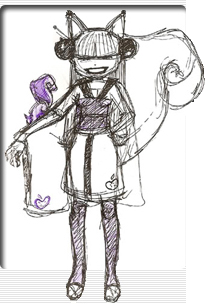

AboutWhen and Where
JAFAX is always the weekend after Father's Day, and for the last 12 years has always been at Grand Valley State University's Allendale Campus.
JAFAX 15 is Saturday, June 26th, and Sunday, June 27th, 2010
at Grand Valley State University, in Allendale, Michigan (see our Location page)
On Saturday: Doors open at 9:30am, Opening ceremonies at 10:00am
Event closes for the night around 6:00pm (except the Iron Man contest which often runs later). Unlike typical conventions, JAFAX does not run all night.
On Sunday: Doors open at 9:30am, programming begins at 10:00am
JAFAX is over after Closing Ceremonies, around 7:00pm
Registration and Costs
JAFAX is a free event, open to the public, no registration required. We do recommend you bring cash for food and buying merchandise from the many vendors that will be there.
More About JAFAX
JAFAX is not a typical anime convention. In fact, you might even go so far as to say we're not a convention at all. Most notably, JAFAX is free; there's no fee to get in the door, no registration, it's completely open to the public. JAFAX is held at a university, not a hotel or conference center. The showing rooms are lecture halls and classrooms, not conference rooms. It doesn't run 24-hours. It's a truly unique experience, a blend of grassroots anime club, multicultural event, and anime convention. You won't find anything else like it anywhere.
JAFAX got started when a gentleman named Rob Grimes, having watched Japanese animation since his childhood, started JAFAX in 1995. His goal was to share his love of anime with others in the West Michigan area.
By using a college campus, he found a way to achieve his goal without having to charge any entrance or "membership" fees. For it's first year, JAFAX was held at the Kendall College of Art and Design in Grand Rapids. The event was basically a day-long screening session, but it allowed nearly 150 local anime fans to network and realize that such an event was possible in this area.
JAFAX quickly outgrew it's original venue, and starting with JAFAX 3, JAFAX moved to Grand Valley State University, where it has been ever since. The additional rooms allowed for a music video contest, a video game room, and a game show, and the event has continued to add more events and special features over the years.
By JAFAX 9, the event was over 2000 attendees in size. JAFAX 9 was also the first year we had a theme, "Anime Luau".
|